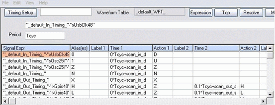
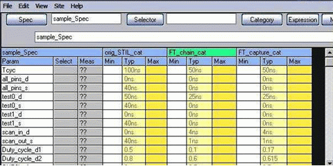
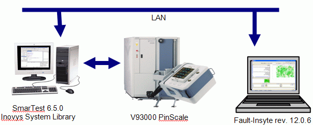
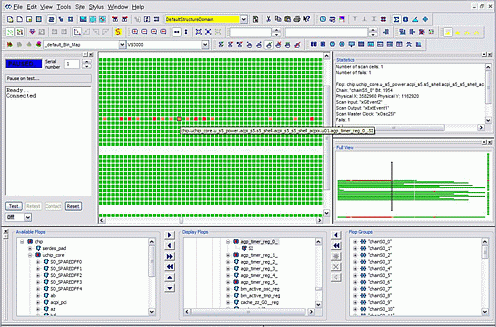
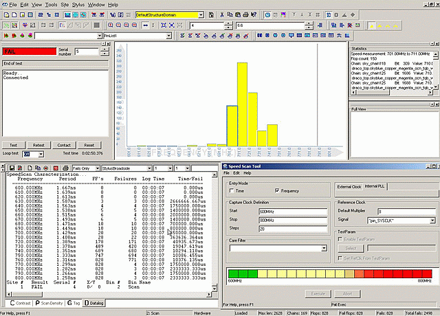
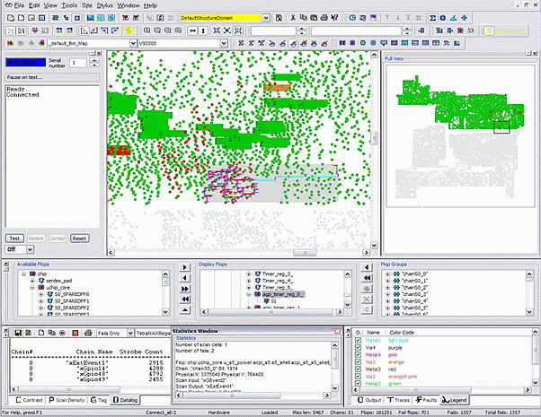

A Fast Approach to Localize Scan Test Failure on V93000b
Edward Huang, Verigy
John Spahr, Verigy
Paper-ID: 120511 April 2010
Abstract
Our customers sometimes run into low yield problem when bringing up new silicon, shrinking to a smaller process technology, or on mature product lines. In many cases the fall-out is in scan test. Finding the root cause of a scan failure can be a time consuming task.
Fault-Insyte tools bring good opportunity to both test engineers, design engineers, and failure analysis engineers to quickly localize the fail location in scan test which helps to shorten the design to market cycle.
Based on several real cases, this paper provides an overview of establishing a test program in Fault-Insyte environment with V93000 system.
Key Words: DFT, FA/PFA, Fault-Insyte, STIL, Scan Structure.
Introduction
Fault-Insyte on V93000 solution allows design, test, and failure analysis engineers to work on the same ATE platform to run Fault-Insyte tools. In the past the test engineers acquire large amount of scan failure log data on ATE, including failing vector cycle number and fail data. These data are then sent to design engineers so that they can run EDA simulation tools with designated fault model, then conclude what scan bit in a scan chain is failing. The gap here is that the test engineers can only provide the information with failing scan vector cycle/data, whereas design engineers want to know which scan bit, or flop, is failing. Running Fault-Insyte on V93000 platform allows engineers to pin point the failing scan bit instantly. This closes the gap between DFT design and test for V93000 users so that it saves time and investment in new product bring up.
There are certain procedures to follow in order to facilitate Fault-Insyte and V93000 SmarTest features. The procedure to build up the Fault-Insyte program for V93000 varies however there is a commonality in work model that can be highlighted in following sessions.
Building Fault-Insyte based test program for V93k
A Fault-Insyte test program is an extension of Stylus test program that was running on the Inovys low cost Ocelot tester. In order to use Fault-Insyte scan debug tools with VV93000 a Fault-Insyte based test program must be built as the starting point.
Required components for both Stylus/Fault-Insyte and V93k
Fault-Insyte tools work with the Pin Scale tester platform. The single-density tester is not supported. Specific SmarTest revisions can be used to support Fault-Insyte (for example, SmarTest6.5.0_Inovis_ship0_2008_1107_0916). Fault-Insyte tools run on a Window based PC or laptop. The tester Linux controller and Windows-PC communicate through a LAN line. The bandwidth of LAN affects the load and execution time. In general the requirement on VV93000 and PC side is -
- Pin Scale tester platform (PS400, PS800 and PS3600). There is a significant performance advantage if a PCIE based CIC card is configured in tester controller;
- SmarTest 6.5.0 for Inovys revision or higher;
- Inovys system library (a UTM shared library);
- A blank test program (where no device set up is needed, but Inovys system library must be placed in "testmethod" directory).
- Fault-Insyte revision 12.0.6 or above;
- License to run Fault-Insyte tools;
Scan pattern file(s) in STIL
Scan patterns in STIL format (IEEE 1450.1) are imported to Fault-Insyte. Pay attention to scan structure blocks that are usually discarded by test engineers when they convert the scan patterns. However it contains all scan cell definitions for all scan chains, therefore this block must be retained in order to provide complete information on failing scan flops. Following example gives main blocks in a STIL scan pattern -
STIL 1.0
Signals {
"IN_1" InOut; "IN_2" InOut; "OUT_1" InOut; "OUT_2" InOut; "CLK1" InOut; "CLK2" InOut;
}
SignalGroups {
_bidi_ = '"IN_1"+"IN_2" + "OUT_1"+"OUT_2"+"CLK1"+"CLK2"';
bidi_time_gen_1 = '"CLK1"+"CLK2"';
" _edt_channel_0__scan_in1_" = '"IN_1"' {ScanIn 1234;}
" _edt_channel_0__scan_out1_" = '"OUT_1"' {ScanOut 1234;}
.....
}
Spec sampleSpec {
Category sample_Cat {
....
}
}
Selector sample_Type { .... }
Timing sample_Timing {
WaveformTable sampleWT_1 {
Period '100ns';
Waveforms {
........
}
}
ScanStructures {
ScanChain edt_channel_0_ {
ScanLength 1234;
ScanInversion 0;
ScanCells " ..... "
ScanIn "scan_in1";
ScanOut "scan_out1";
ScanMasterClock "CLK1" "CLK2";
}
MacroDefs {
"scan_grp1" {
W sampleWT_1;
Shift {
V { "_edt_channel_0__scan_in1_" = #; "_edt_channel_0__scan_out1_" = #; }
}
}
PatternBurst sample_pat_Burst {
PatList {
pat1;
....
}
PatternExec {
Timing sample_Timing;
Selector sample_Type;
Category sample_Cat;
sample_pat_Burst;
}
Pattern pat1 {
W sampleWT_1;
V { _bidi_= .... ;}
"chain_pattern 0":
V { _bidi_= .... ;}
Macro "scan_grp1" {
"_edt_channel_0__scan_in1_" = .... serial data ....;
"_edt_channel_0__scan_out1_" = .... serial data ....;
......
}
V { _bidi_= .... ;}
}Design database (optional)
The physical view of the silicon die can be generated with the design exchange file (DEF) and the layout exchange files (LEF). The physical view illustrates the on-the-die location with X/Y coordinates for each gate.
Basic test program
There are 2 stages to bring up a test program to run Fault-Insyte on V93k:
- Import the ATPG files to generate a Stylus based test program. V93000 on-line access is not required.
- Test program execution and data acquisition using V93K. On-line tester access is required.
Pin configuration, timing and levels.
By importing STIL into Stylus/Fault-Insyte a default pin configuration file is generated. Some manual works is required to map the DUT pins to VV93000 tester channels so that an existing VV93000 production DUT board can be directly used for running Fault-Insyte tools. A Perl script can help to perform the pin mapping automatically.
A timing block will be generated as well. The timing value for all events and period is fixed (hard coded).
Levels blocks are not automatically generated in STIL, therefore the levels blocks for Stylus/Fault-Insyte must be built manually according to the DUT electrical specifications or from the existing VV93000 test program.
Equation based timing and levels are possible by utilizing the "Specification" block in STIL. It allows you to best match what was programmed in the existing V93000 ATE environment. An example of equation based timing and Spec Tool GUI in Fault-Insyte is shown below in Figure 3-1 and 3-2.

Figure 3-1: Equation based timing in Fault-Insyte

Figure 3-2: Spec Tool GUI in Fault-Insyte
Pattern management
Once the STIL pattern files are imported they need to be compiled. Multiple pattern files can be imported and compiled using the same timing block. One or multiple patterns can be included in a pattern burst block. A pattern exec block calls all desired patterns, timing, and level blocks so that they can be defined in a test segment in the next step.
Building and running the test flow
A test segment is the minimum element in a test flow to run Fault-Insyte test program. The test flow can be very simple for example, single segment) for scan failure analysis purposes.
Test program and Fault-Insyte tools run on Windows PC. Execution commands and data are sent to or received from the VV93000 via LAN. Figure 3-3 shows the topology of Fault-Insyte use model.
A blank device program is required as the frame-work where the wrapper functions in the Inovys system libraries are received and interpreted by the UTMs. Then massive amount of data is transferred such as pin configuration, DC levels, timing and vector data.
Most of the SmarTest debug tools can be used together with Fault-Insyte during program debug. Sometimes it is more efficient to use SmarTest debug tools as no data transfer is required from V93000 to Fault-Insyte PC host.

Figure 3-3: Use model of Fault-Insyte with V93K
Running Fault-Insyte tools with V93K
The value of running the Fault-Insyte program and tools is to perform scan failure analysis. STDF is captured and analyzed in Fault-Insyte soft-ware tools that deliver different type of analytical result.
Scan chain view
This tool provides information that DFT engineers want to know, such as the failing scan flops in all failing chains. The representation can be in a text list, file and logical view. Two graphical display modes are available: scan chain view that highlights the linear location of failing scan bits in the failing chain, and hierarchical view that displays the hierarchical structure of failing flops. The result is instantly available each time the test program is executed.
In addition, the information of failing flops can be saved in a file in specific ATPG format, and then fed to ATPG tools for further analysis. Figure 4-1 gives an example of different Scan View outputs.

Figure 4-1: Screenshot of scan view tool. Failing bit information is displayed in graphical view and in report window. Scan structure hierarchical display is available.
Running blocked chain and hold time violation analysis
A design error or a fabrication defect can cause a blocked chain fail. This can show up as a DC fault, or a functional failure that can be related to DC or AC parameter variation. The Blocked Chain Analysis tool (BCA) generates a report which highlights the blocked bit in a blocked scan chain. This helps DFT designers to pin point the logical fail location directly and instantly. The value of this tool is its speed. It can determine where a chain is blocked in seconds to minutes rather than hours or days by traditional methods. The Listing below shows an example that a broken scan bit is reported in text format and graphical display.
The Hold Time tool helps to determine the probability of hold time violations that have taken place in scan chains. At this time the tool detects the voltage sensitive related hold time faults. Dynamic patterns are generated and compiled before running these tools. Again, the value of the tool is its speed. All hold time faults can be found in minutes rather than hours or days.
Chain: edt_channel_in_spf0_0_
Signal: "DQB0_29"
Length: 10769
Broken Bit: 2776
uchip.core.spf0.sp4.usp4_sms.usp4_gpr8 \
.usp4_rfps2p256x128m2bqg.vl_wr_sp_t_sms_proc_rfps2p256x128m2bq_wr_1 \
.U_sp_t_sms_proc_rfps2p256x128m2bq_int_wr \
.U_rfps2p256x128m2bq.ff_DA_int_8
Score: 98%Listing: an example of DCA output. Broken chain name, bit number, flop name and probability score are reported
Running AC scan failure analysis with SpeedScan
SpeedScan is an AC characterization tool which measures the maximum speed of the device on a per flop basis.
In the past, the maximum speed of the device was determined by the last passing frequency. If a pattern failed the initial programmed frequency, no data could be gathered to help engineers debug the device.
FaultInsyte keeps the scan structures of the device from the ATPG generated files. This gives a direct link to all the flops. Once a flop fails, the last passing frequency is stored and the flop can be ignored for the remaining frequencies run. All other flops continue to be evaluated for the remaining frequencies.

Figure 4-3: Screenshot of SpeedScan tool with histogram view. Failing flops and their maximum speeds are displayed in graphical view and in report window.
For first silicon, SpeedScan can save time and money. If the pattern fails for the initial characterization frequency, the flops are recorded and then ignored. Data can continue to be gathered for all other flops. Gathering data for all flops is valuable since this can reduce the number of masks generated for the Fab.
SpeedScan is also useful for gathering data such as the design slack. All paths have a specific speed they are designed for. SpeedScan can help determine if the paths are being over/under designed and by how much.
Generating a silicon die physical view with signal trace tracking
The Physical view tool in Fault-Insyte helps PFA engineers to position the faulty flops on the silicon die. This is possible when the DEF and LEFs are available to test engineers. Each scan cell and its geometric data and position are interlinked and displayed so that each failing flop can be positioned with graphical display and with X/Y coordinates. In addition a special "Splat" display helps to track data/clock traces of different gates through different metal layers and vias, which allows PFA engineers to quickly track the adjacent gates that are relevant to the failing flop. Figure 4-4 shows a portion of physical view and its Splat view.

Figure 4-4: Physical view (top center: zoomed to selected failing flop with splat display to show fan-in clock traces. Top right: full view).
Conclusion
Different from traditional ATE approach such as fail capture memory, Fault-Insyte on the V93000 provides a different approach to quickly localize the scan failure in DFT designers' language. A test applications engineer can play a more important role in scan diagnostics with the power and flexibility of the V93000 SOC test system. The Fault-Insyte tool on V93000 solution can effectively reduce the scan failure analysis cycle. It helps customers to localize the design or fabrication issues so that the same issue will not likely to repeat in the next new silicon bring up.
References
[1] Tony Taylor, Greg Matson, "Standard Test Interface Language (STIL) A New Language for patterns and Waveforms", ITC96, 1/25/96.
[2] Dan Fan, Steve Roehling, Rusty Carruth, "Case Study - Using STIL as Test Pattern Language", ITC03.